CSAPP 之 Bomb Lab
脑越用越灵，手越用越巧。
前言
没想到这BombLab果然有趣。一开始实验的时候还是有点困难的，主要是对GDB调试和一些知识点不够熟悉。虽然前面两个问题都有借鉴别人的方法。但是后面四个难度最大的真的是独立完成，完成的瞬间成就感不言而喻，达到climax。可能主要是对汇编有一点底子所以实验相对比较容易。
CSAPP 实验记录
快速开始请访问 CSAPP Lab 官网，本次实验记录是基于 CSAPP 3.0，实验日期始于：2019-3-18
实验开始前的归纳
这个实验首先要求对汇编有一定的掌握，所以在此就不列举汇编的相关内容了。个人感觉用到最重要也是想要入手必须要具备的知识：一是学会使用反汇编及调试工具，二是了解函数调用的栈帧。
栈帧
想要了解栈帧的结构？我们还是先来回顾（review）以下有哪些和函数栈相关的寄存器吧。（这儿并没有包含浮点寄存器）
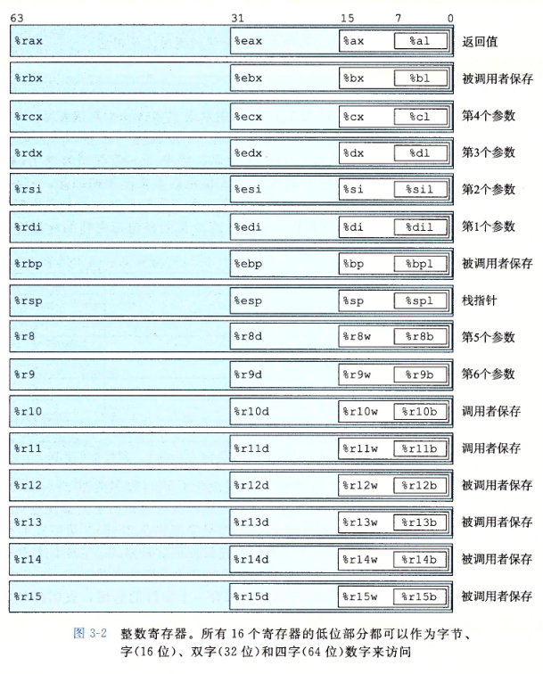
- 所谓调用者保存，就是可以让被调用者（自身不作为另一个调用者）随意使用，也是为了自己用到的数据不被覆盖。
- 所谓被调用者保存，恰恰与调用者保存相反。
- 函数调用一般参数传递（非浮点）前6个参数存于寄存器，剩下的参数按照函数定义从右向左压栈。
- 栈指针指向函数栈栈顶。
- %rax用于保存函数调用返回值。
了解了这些寄存器，我们再来看看栈帧的结构
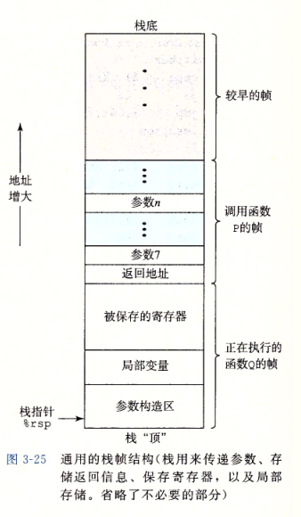
就拿函数P的栈帧来说，从栈底到栈顶的方向分别存储以下内容：
- 被保存的寄存器
- 局部变量（
sub $0x18,%rsp） - 如果调用其他函数参数多于6，便有参数构造区
- 调用其他函数时需要将返回地址压栈
工具使用方法
CGDB
跟随孟佬用的CGDB，官网及gdb使用方式，以下是CGDB运行缺省截图。
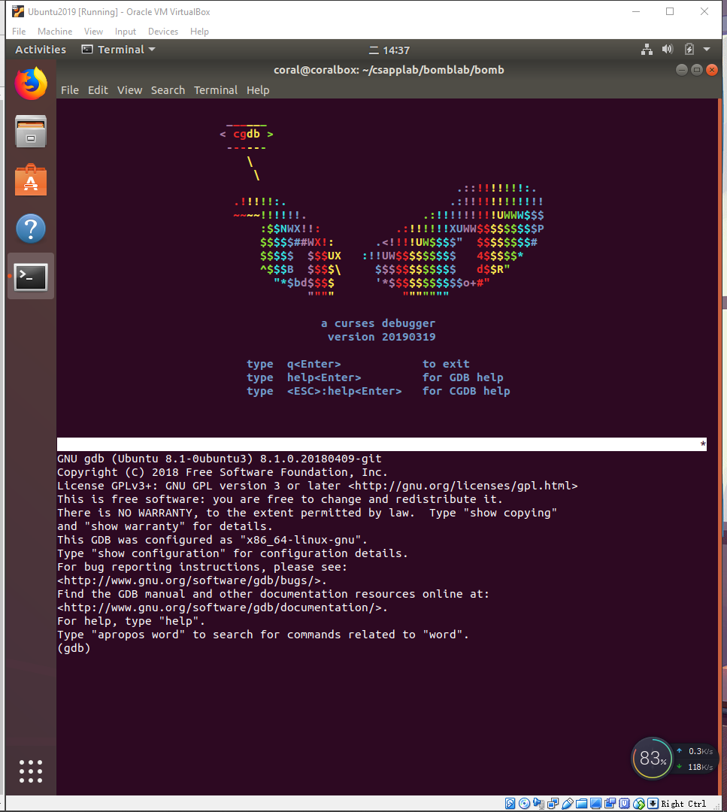
Bomb Lab
BombLab家喻户晓，个人感觉之所以这个实验这么有名，主要有三点：
- 一是作为配套实验能够真正的训练学到的程序机器级表示的内容；
- 二是必不可少的一部分——实验的有趣性；
- 三是能够加强我们的调试程序的能力，终身受益（前提你是程序员:smile:）。
一开始
好了开始真正的实验部分了。
首先我们使用如下命令来开始调试bomb可执行程序：
1 | cgdb bomb |
就会看到如下界面：
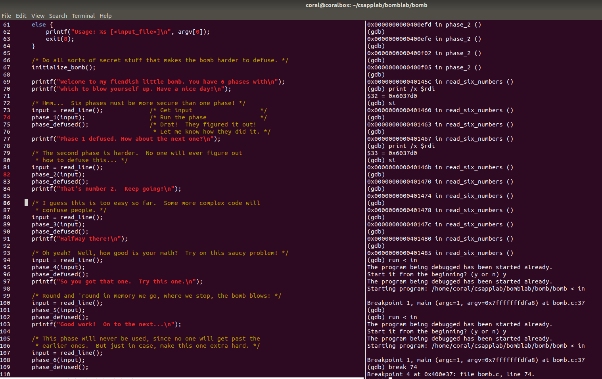
这是给我们的主程序，里面主要是炸弹程序的初始化，以及这些炸弹的输入以及输入检测。
在CGDB模式下我们可以使用:set disasm命令将主程序以汇编形式展示，当然使用:set nodisasm就会返回原来的样子。
思路
运行
在GDB模式下，使用run命令开启调试。通过输入重定向的方法避免多次输入：run < in.txt
设断点
在GDB模式下，使用break 行号打断点
调试
设置断点后，具体参照GDB手册进行调试。
Example
比如想要破解Phrase1这个炸弹，需要执行以下步骤：
- 设置调用函数断点（
phrase_1(input)处） - 运行至断点处并调试（
stepi+nexti+finish+continue等命令） - 进入函数内部进一步观察（使用
print+x等命令） - 分析代码得出答案
#Phrase Before
如果你是第一次做实验的话，这一步你一定要知道：
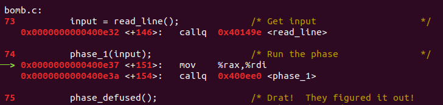
这六个炸弹都是都是通过一个read_line函数从输入流（不管是标准输入还是文件输入重定向）中读取的，返回值为input，对应于%rax寄存器（存放的一个输入字符串的首地址）。我们看到将%rax寄存器的内容转移到%rdi寄存器里了，我们知道寄存器%rdi用于存放调用函数时的第一个参数。接下来就调用炸弹函数了。
再强调一遍，所有的炸弹函数的第一个参数%rdi都是我们输入的字符串的首地址。
#Phrase 1
第一个炸弹的汇编代码如下所示：
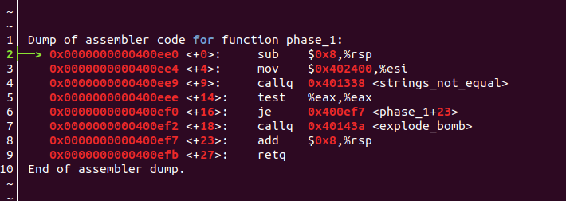
第一个算是一个入门的，主要是想让你熟悉一下BombLab的流程。
我们输入的字符串首地址在%rdi中；
②行申请了8个字节的栈空间；
③行将一个立即数（一看就是一个地址）存放到%esi寄存器（这是第二个参数）
④行调用了一个函数，如果你想快速通过的话不用看内部实现，是比较两个字符串是否相同。（内部比较就不说了，一个一个比较字符而已）
⑤行使用test命令（同and命令，不修改目标对象的值）来测试%eax中的值是否为0，如果为0则跳过引爆炸弹的函数。
很简单了，使用x/s 0x402400按字符串输出这个地址存储的内容（这个可能是我在比较字符串的函数内输出的 :smile: ）：
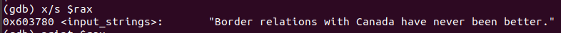
第一弹，拆除完毕！
#Phrase 2
第二弹，来吧勇士！（好吧，感觉有点中二。）
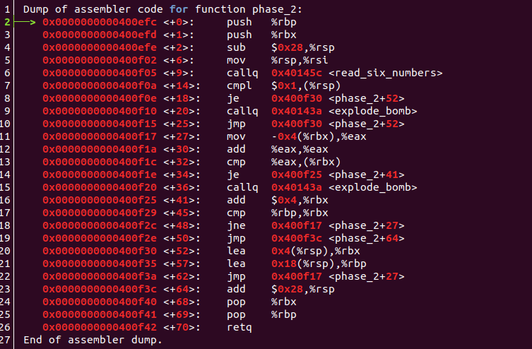
嗯，映入我们眼前的是一个<read_six_numbers>函数，一猜也是让我们输入6个数字:
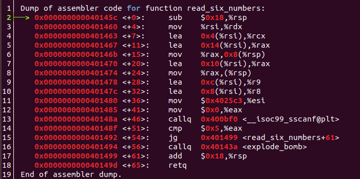
然后我们查看一下这个函数内部，发现里面又调用了sscanf这个函数（功能是从一个字符串中读取一定格式的数据，和scanf一样，除了scanf是从标准输入流中读取）。参数顺序分别是，待读取内容的字符串、用于格式读取的格式化字符串，还有各个变量读取后存放的地址。
1 | int sscanf( const char *buffer, const char *format [, argument ] ... ); |
我们查看<read_six_number>中参数构造如下：
%rdi，输入传入的字符串首地址%rsi，由0x4025c3地址的字符串决定，不出意料果然是%d %d %d %d %d %d%rdx，由%rsi给出，%rsi又由phrase2的%rsp给出，所以phrase2中的%rsp地址处存放sscanf中第一个输入的值%rcx，phrase2中的%rsp+0x4处存放第二个值%r8，phrase2中的%rsp+0x8存放第三个值%r9，phrase2中的%rsp+0xc存放第四个值- 第五个、第六个值所在的地址需要通过压栈传参，由栈帧压栈顺序是从右向左压栈，可知，
phrase2中的%rsp+0x10存放第五个值、phrase2中的%rsp+0x14存放第六个值。
好了，知道输入的值都到哪儿去了，这样就简单了许多了，然后再看phrase2函数：
首先看**<+14>**处，第一个数必须是1，不是炸弹就爆炸。
不是就跳到**<+52>处，然后<+27>到<+52>**构成一个循环，意思是比较后一个数必须是前一个数的两倍。
那答案就出来了：1 2 4 8 16 32
#Phrase 3
好了，兄嘚，第三炮！
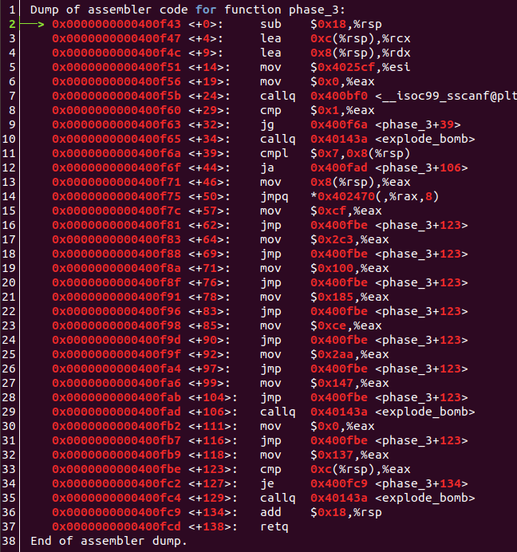
输入还是sscanf函数，同理，%rdi是我们输入的，%rsi是format打印一下看是%d %d，需要两个地址存放，分别是%rdx和%rcx，对应于%rsp+0x8和%rsp+0xc。输入完成后，查看返回值%eax必须大于1，两个输入必然是最满足要求的。满足之后，我们来到了**<+39>**的位置，我们比较第一个输入值x和7，如果第一个x大于7则爆炸，所以x是<=7的。
接下来将x值放入%eax寄存器，然后通过间接跳转跳转到0x402470+8*%eax地址所存储的地址。我们可以看到这个跳转目标和输入有关的。然后我们可以输出相应的地址，发现跳转的地址刚好是修改%eax的地方，最终%eax都要和第二个数y（%rsp+0xc地址存储的值）相等。
就比如说x为0，则跳转到0x402470的地址中存储的地址（**<+57>的位置），将%eax修改为0xcf（十进制207），然后跳转到<+123>**处比较0xcf和y值，相等才不会爆炸。所以结果可以输入0 207。
答案还有好几个，不一一列举了！
#Phrase 4
第四弹！
主要考察递归函数调用（当然你也可以避过这个问题！）
先看主要部分代码：
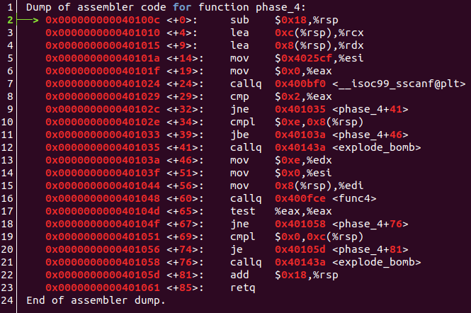
通过这个程序我们可以分析出，除了输入函数和爆炸函数之外，还调用了一个func4 函数。输入的是两个数字，存于%rsp+0x8和%rsp+0xc处。我们还可以分析出，调用这个函数之后返回值%eax必须为0，而且第二个输入的数必须为0。
我们再看传入的参数：
%rdi：第一个数，记作x%rsi：0%rdx：0xe，即14%rcx：第二个数，记作y。不确定会不会用到，看到下面的代码很显然没用使用到，直接被覆盖了。
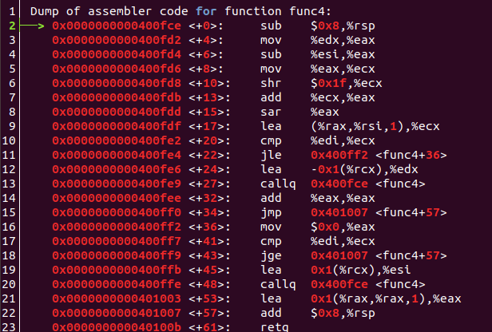
查看代码，如果你进入了递归是太恶心了，不过也可以分析，好像要求输入x值必须满足是一个数列的元素。那么如何避免递归，看**<+22>行，可以分析出此时%ecx的值为7，如果%edi也就是x值如果>=7的话，那就会跳转到<+36>**，此时将%eax置位0（满足返回值为0），然后再比较刚比较的%edi和%ecx，如果%edi<=7的话就结束。所以最终x=7满足条件。
所以很简单的答案，7 0。递归的值没仔细考虑，实在是递归太难调试了，可能是自己没掌握到方法。很遗憾。
#Phrase 5
第五发！
这个也比较有趣，主要是涉及到了ASCII码，感觉真的是在破译代码，解除炸弹！
下面就是代码：
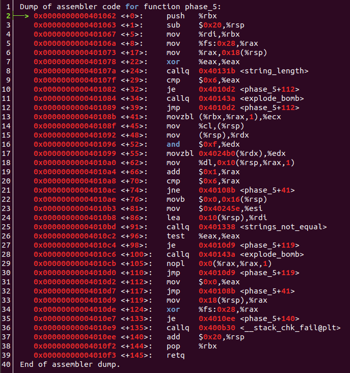
首先我们看到了%fs寄存器，这是用于存储当前活动线程的TEB结构地址的一个寄存器，和解题无关，可以不用在意。
首先输入的字符串地址在%rdi中，然后调用string_length函数，可以看电脑返回值%eax必须为6，也就是输入的字符串长度必须为6。
接下来的一段程序主要是以下作用：
- 取6个ASCII码低4位，记作
low4[i]。 - 将
low4[i]作为偏移量和常量A（0x4024b0）相加作为地址取得改地址存储的字符character[i] - 将这一系列字符
character分别存于%rsp+0x10到%rsp+0x15 - 调用
strings_not_equal比较这些字符和存于0x40245e的字符串（flyers）是否相等，相等则结束
那么很简单了！
常量A地址开始存储的是什么字符？（忘了截图了……），是maduiersnfotvbyl共16个。我们找到flyers这六个字符的相对偏移地址用16进制表示分别为9fe567，然后据此查找ASCII码查看低四位相同的字符（答案不固定，我找到的是ionufg）。
完事！
#Phrase 6
最后一弹，是有点难度的，一定要找一个比较好的环境做，需要大约2个小时的时间。争取一次性完成。
这一弹主要是考察循环了，循环炒鸡多有木有！另外还需要知道链表的结构。
由于代码太多，就不一一写了，主要是写一下代码的作用。
代码如下：
首先是第一部分：
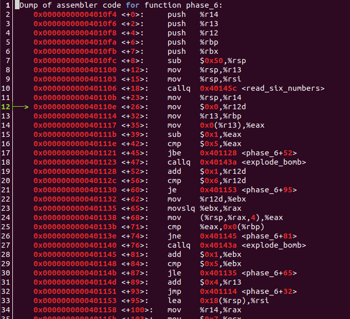
首先读入了6个数字，分别放入了%rsp+0x0、%rsp+0x4、%rsp+0x8、%rsp+0xc、%rsp+0x10、%rsp+0x14
这是第一个大循环，**<+32>到<+93>行，内嵌一个小循环<+65>到<+87>**行。大循环中部分的作用是确定每个数必须<=6；小循环的作用是确定第i个数不和第i+1~第6个数相同（也就是输入的所有数字不能有相同的）。
接下来再看剩下的部分：
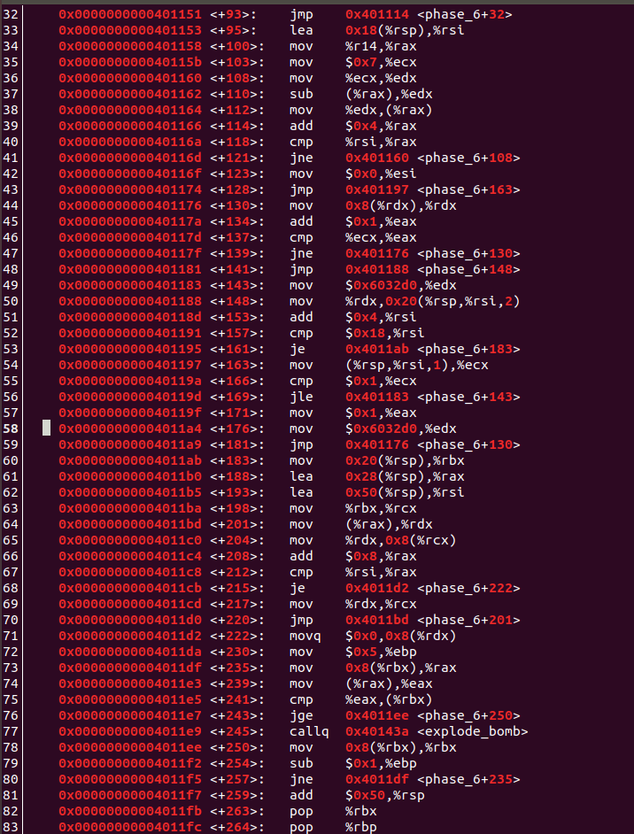
首先有个循环**<+103>到<+121>**，主要作用就是令a[i]=7-a[i],i=1,2,3,4,5,6，就是将存于栈中的数（也是你输入的数）进行对7求补并保存回原位置。
接下来又有一个大循环**<+130>到<+181>部分，里面嵌入了一个小循环<+130>到<+139>**。主要作用是访问一个链表，链表的首地址为0x6032d0，针对输入的第i个数，按照a[i]的值获取链表第a[i]个节点，并把节点首地址放入%rsp+0x20+0x0~到%rsp+0x20+0x28刚好是6个节点。
然后下面一段代码，又是一个循环**<+235>到<+257>**，主要是说明%rsp+0x20+0x0~到%rsp+0x20+0x28存储的链表节点值必须是递减的。
下面打印的是这六个节点的值和指向下一个节点的地址。
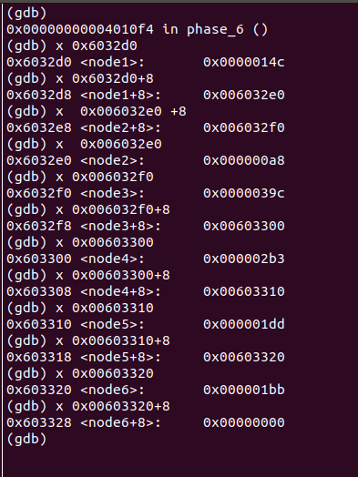
找到了各节点的值，我们就可以排序得到节点标号的排序，节点标号的排序恰恰是输入6个数字对7求补的值，然后再对7求补即可得到结果4 3 2 1 6 5。
结果
完成的一瞬家很爽！秀一下结果！
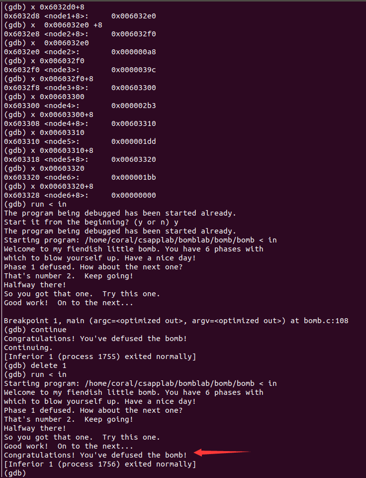
总结
这次实验真的是收货颇丰，一是完成了大名鼎鼎的bomblab，二是切切实实的学到了新东西。
所感
- 相对于上次实验，感觉动手能力变强了
- 自己有一些浮躁
- 实验时有时走神，（主要是没有草稿时是这样的，没草稿直接看是很难看出答案的。。我太菜。）
所得
- 学会了GDB的使用方法，对调试又有了一定的认识
- 彻底理解了栈帧的设计
- 熟悉了一些常用寄存器的用途
- 熟悉了AT&T x86-64汇编指令
下一步
- 实验时要草稿纸，好记性不如烂笔头
- 静下心来，莫浮躁，循序渐进。
- 阅读英文书籍，增强英语环境下的学习能力